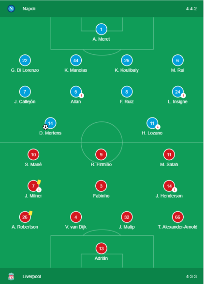

UEFA Champions League
· (09-17) Full-time 2-0
2-0

Group Stage · Group E · Match Day 1 of 6
Dries Mertens 82'(P)
Fernando Llorente 90+2'
Timeline
ℹ INSIGHTS
- Napoli have now won five of their six Champions League home games against English opposition (L1 – a 2-4 defat to Man City in November 2017).
- Liverpool have lost their opening Champions League match of a new campaign for only the second time (P12 W6 D4 L2), and for the first time since a 0-2 defeat to Valencia in September 2002.
- Liverpool had more shots in the opening 22 minutes of this match (five) than they managed through the entirety of this exact fixture in the competition last season (four).
☊ COMMENTARY
Liverpool's first match in the defence of the Champions League trophy ends in defeat as Napoli beat them 2-0. Napoli had a goal disallowed in the first half when Lozano headed the ball into the net following a brilliant double save from Adrian only for the offside flag to go up. In the 80th minute, they won a penalty when Robertson brought down Callejon and Mertens converted the spot-kick despite Adrian getting a hand to it. Llorente then secured the win in stoppage time when Van Dijk gave the ball away in his own box and the substitute found the bottom left corner with his shot.
Lineups
|
|
SUBSTITUTES |
|
| 9 Fernando Llorente | 9 Fernando Llorente | |
| 9 Fernando Llorente | 9 Fernando Llorente | |
| 9 Fernando Llorente | 9 Fernando Llorente | |
| 9 Fernando Llorente | 9 Fernando Llorente | |
| 9 Fernando Llorente | 9 Fernando Llorente | |
| 9 Fernando Llorente | 9 Fernando Llorente | |
|
|
MANAGER |
|
| C.Ancelotti | J.Klopp |
Stats
|
|
TEAM STATS |
|
| 10 | Shots | 13 |
| 5 | Shots on target | 4 |
| 47% | Possession | 53% |
| 58 | Passes | 135 |
| 52% | Pass accuracy | 65% |
| 15 | Fouls | 8 |